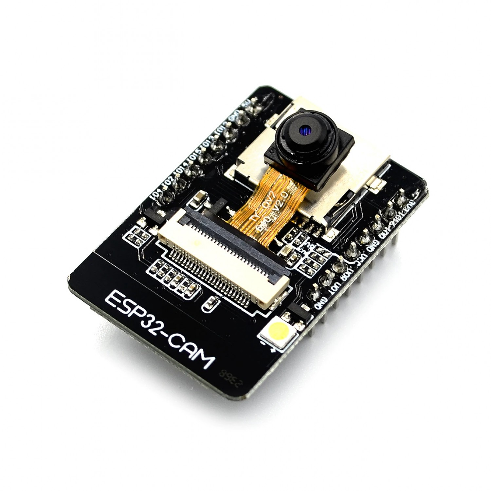

Projet IoT
ESP32CAM via MQTT
Auteurs : Joris Bouvier, Ismail El Belghiti, Hachem Mehieldine
Introduction
- Utilisation de l'ESP32-CAM pour la capture d'images
- Transmission via le protocole MQTT
- Traitement et affichage avec Node-RED
- Stockage avec InfluxDB
- Visualisation des données avec Grafana
Objectifs
- Capturer des images avec l’ESP32-CAM
- Envoyer les images encodées en Base64 via MQTT
- Créer des flux Node-RED pour traitement et affichage
- Stocker les images dans InfluxDB
- Visualiser les données avec Grafana
Matériel Utilisé
- ESP32-CAM : module de capture d'images
- Raspberry Pi 3 : serveur pour WiFi, MQTT, Node-RED, InfluxDB, et Grafana

Réalisation
1. Installation des Outils
- Configuration sur Raspberry Pi 3 :
- RaspAP pour un réseau WiFi local
- Mosquitto : broker MQTT
- Node-RED : flux de données
- InfluxDB : stockage des données
- Grafana : visualisation des données
- Documentation détaillée disponible sur GitHub.
2. Prise en Main des Outils
ESP32-CAM
- Configuration pour capturer des images via une interface web.
- Fonctionnalités : capture de photos, flash, flux vidéo, reconnaissance faciale.

Protocole MQTT
- Transmission de données via Mosquitto.
- Visualisation des messages avec MQTT Explorer.
Node-RED
- Création d'un flux pour traiter les données transmises via MQTT.
- Envoi de messages MQTT pour interagir avec l’ESP32-CAM.
3. Transmission et Décodage d'Images
Transmission
- Code Arduino pour capturer et encoder les images en Base64.
- Envoi des images via MQTT.
Décodage et Affichage
- Flux Node-RED pour décoder les images et les afficher sur un tableau de bord.
- Ajout de contrôles pour prise de photos et activation du flash.
4. Stockage et Visualisation
- Images stockées dans InfluxDB via Node-RED.
- Affichage des images sur un tableau de bord Grafana.
Domaines d'Application
- Surveillance : gestion à distance des caméras.
- Sécurité : contrôle d'accès et monitoring.
- Domotique : gestion de dispositifs connectés.
- Santé : suivi à distance des patients.
- Industrie : supervision des machines.
Avantages
- Facilité d’utilisation et d’intégration.
- Modularité et extensibilité du système.
- Coût relativement faible.
Limites
- Résolution limitée des images capturées par l’ESP32-CAM.
- Dépendance aux connexions réseau pour la transmission des données.
Améliorations Potentielles
- Amélioration de la qualité des images :
- Compression d'images.
- Utilisation d’une autre caméra.
- Ajout de nouvelles fonctionnalités :
- Détection de mouvement.
- Reconnaissance faciale ou d’objets.
Conclusion
- Technologies explorées : ESP32-CAM, MQTT, Node-RED, InfluxDB, Grafana.
- Objectifs atteints : Capture, transmission, stockage, affichage d’images.
- Points forts : Facilité, modularité, coût réduit.
- Applications : Surveillance, sécurité, domotique, santé, industrie.
- Perspectives : Améliorations de la qualité, ajout de fonctionnalités avancées.